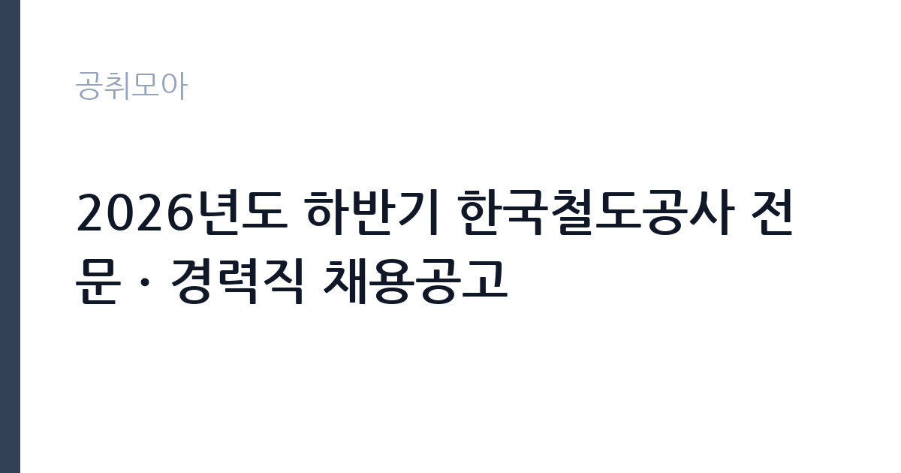

[공공기관] 2026년도 하반기 한국철도공사 전문ㆍ경력직 채용공고
한국철도공사 · 서울 · 마감 2026-10-07 (D-11) · 출처 잡알리오

한눈에 보는 모집 조건
| 기관 | 한국철도공사 |
|---|---|
| 공고명 | 2026년도 하반기 한국철도공사 전문ㆍ경력직 채용공고 |
| 고용형태 | 정규직 |
| 근무지 | 서울 |
| 게시일 | 2026-09-23 |
| 마감일 | 2026-10-07 (D-11) |
지원자격, 이렇게 읽으세요
- 공공기관 채용공시
- 세부 조건은 원문 공고문 확인
공통 지원자격은 성별과 거주지, 연령에 제한이 없습니다. 다만 경력직은 공사 정년이 만 60세이므로 1966년 12월 31일 이전 출생자는 지원하실 수 없습니다. 남성은 군필 또는 면제자에 한하며, 전역일이 최종합격자 발표일 이전이고 면접심사에 참석하실 수 있는 경우에 지원하실 수 있습니다. 공사 직원 채용 결격사유에 해당하지 않으셔야 하고, 최종합격자 발표일 이후부터 근무가 가능하셔야 합니다. 외국인 지원자는 거주와 재외동포, 영주권 자격에 한합니다. 채용 분야별 세부 응시자격은 경력과 자격증, 학위 요건 등이 다르므로 반드시 원문 공고문에서 본인이 지원하시는 분야의 조건을 확인하셔야 합니다. 물류사업본부장과 같은 고위 분야는 별도의 자격 요건이 적용될 수 있습니다.
이 공고의 포인트
이 공고의 특징은 세 가지입니다. 첫째, 신입 공채가 아니라 전문직 26명과 경력직 17명을 뽑는 경력 중심 채용이므로 신입과 직접 경쟁하지 않으셔도 됩니다. 둘째, 물류사업본부장을 포함한 분야별 전문가를 선발하는 만큼 해당 직무의 실무 경력이 핵심 평가 요소가 됩니다. 셋째, 연령과 거주지 제한이 없어 전국의 경력자가 지원하실 수 있으며, 외국인의 경우에도 체류자격 요건만 충족하시면 문이 열려 있습니다. 2026년 하반기 신입사원 600명 채용과 별도로 진행되는 전형이므로, 코레일 입사를 준비하시던 경력자에게는 신입 공채와 함께 노려볼 수 있는 기회입니다.
전형은 어떻게 진행되나
세부 전형 절차와 일정은 원문 공고문에서 확인하셔야 합니다. 일반적으로 공사의 경력직 채용은 입사지원서 접수와 서류심사, 면접심사, 신체검사와 적성검사, 임용의 순서로 진행됩니다. 서류심사에서는 해당 분야의 경력 기간과 직무 연관성, 자격증과 성과가 주요 평가 요소가 됩니다. 면접심사에서는 실무 이해도와 문제해결 경험을 중심으로 검증이 이루어집니다. 경력직 특성상 제출하신 경력기술서의 내용이 면접 질문으로 직결되므로, 경력 기간별 담당 업무와 성과를 수치와 함께 정리해 두시기 바랍니다. 접수 마감 시각이 10월 7일 오후 2시로 명시되어 있으니 마감일 오후 접수는 피하시는 편이 안전합니다.
원문에서 확인한 전형 방식
○ 공통사항 (1) 성별,거주지,연령 : 제한없음 * 단, 경력직은 ’66.12.31. 이전 출생자(공사 정년 만 60세 도달)는 지원 불가 (2) 병역 : 남성의 경우 군필 또는 면제자에 한함 * 다만, 전역일이 최종합격자 발표일 이전이며 면접심사에 참석 가능한 경우 지원 가능 (3) 기타 : 공사 직원 채용 결격사유에 해당하지 않는 자, 최종합격자 발표일 이후부터 근무가 가능한 자, 외국인의 경우 거주(F-2), 재외동포(F-4), 영주권자(F-5)에 한함 ○ 채용분야별 세부 응시자격은 공고문 참조
이런 분께 추천해요
- 철도·물류·경영 등 해당 분야의 실무 경력을 갖추고 공기업으로 이직하시려는 분께 적합합니다. 경력 중심 전형이라 신입과 경쟁하지 않으셔도 됩니다.
- 수도권과 충청권 근무를 희망하시는 경력자에게 적합합니다. 근무지가 서울·대전·경기·충북 권역으로 안내되어 있기 때문입니다.
- 연령과 거주지 제한 없는 공기업 채용을 찾으시던 분께 적합합니다. 해당 분야 자격만 갖추시면 폭넓게 지원하실 수 있습니다.
지원 전 체크리스트
- 지원하시는 분야의 세부 응시자격인 경력 기간과 자격증, 학위 요건을 원문 공고문에서 확인하셨습니까.
- 경력직 연령 제한인 1966년 12월 31일 이전 출생 해당 여부와 군복무 관련 요건을 확인하셨습니까.
- 경력기술서에 기재할 경력의 재직증명서와 경력증명서 등 증빙서류를 발급받으실 수 있습니까.
- 접수 마감 시각이 10월 7일 오후 2시이므로 제출 일정을 미리 잡아두셨습니까.
모집 일정과 제출 타이밍
지원서 접수 마감은 2026년 10월 7일 오후 2시입니다. 마감 시각이 오후로 못 박혀 있으므로 마감일 접수는 접속 지연의 위험이 있습니다. 늦어도 마감 2일 전까지 제출을 마치시고, 이후 서류심사 합격자 발표와 면접심사, 신체검사·적성검사, 임용의 순으로 진행됩니다. 경력직 전형은 서류의 완성도가 당락을 좌우하므로 접수 기간 초반에 지원서를 제출하신 뒤에는 경력기술서 보완과 면접 준비에 시간을 쓰시기를 권합니다.
직무 이해하기: 공공기관
한국철도공사는 전국 철도 여객과 물류 수송을 담당하는 철도 운영 공기업입니다. 130년의 역사를 가진 국내 최대 철도 기관으로, 고속철도와 일반철도, 광역전철 운영과 함께 물류 사업을 확대하고 있습니다. 전문직과 경력직으로 입사하시면 해당 분야의 실무 전문가로서 본사와 지역 본부에서 직무를 수행하시게 됩니다. 물류사업 분야는 철도 화물과 복합운송의 경쟁력 강화가 현안이며, 경영·기술 분야도 현장 중심의 실무 역량이 요구됩니다. 배치 소속과 직무의 근무 형태는 통상일근과 교번, 교대근무 등으로 나뉘므로 지원 분야의 근무 형태를 원문에서 확인하시기 바랍니다.
자기소개서 작성 팁
경력직 지원서에서는 경력기술서가 사실상 자기소개서의 역할을 합니다. 경력 기간별로 담당하신 업무와 본인의 역할, 성과를 구분하여 작성하시고, 성과는 가능한 수치로 제시하시기 바랍니다. 지원 분야와 직접 연결되는 경험을 앞쪽에 배치하시고, 철도·물류 분야의 현안에 대한 본인의 관점을 덧붙이시면 됩니다. 자격증과 교육 이수는 직무 연관성이 높은 순서대로 정리하시는 편이 좋습니다. 경력의 공백 기간이 있으시면 사유를 솔직하게 기재하시는 편이 추후 검증 과정에서 안전합니다.
면접 준비 포인트
면접에서는 제출하신 경력기술서를 바탕으로 실무 검증 질문이 이어집니다. 본인이 주도했던 프로젝트나 업무 개선 사례를 중심으로, 당시의 문제 상황과 본인의 판단, 결과를 설명하실 수 있도록 준비하시기 바랍니다. 물류사업 등 경영 분야에 지원하신다면 철도 물류의 현안과 공사의 사업 방향에 대한 견해를 정리해 두시는 편이 좋습니다. 기술 분야는 현장 안전과 장애 대응 경험을 구체적으로 설명하실 수 있어야 합니다. 공사의 인재상과 핵심가치를 본인의 경험과 연결하여 답변하시면 좋은 평가를 받으실 수 있습니다.
급여·근무조건 읽는 법
원문 공고문에 분야별 보수 조건이 안내되어 있으므로 지원하시는 분야의 금액을 반드시 원문에서 확인하시기 바랍니다. 참고로 2026년 하반기 신입사원 공고 기준으로 정규직 임용 시 연봉은 약 4,050만원 수준으로 안내된 바 있으며, 이는 세전 금액으로 성과상여금은 별도이고 근무체계에 따라 금액이 달라집니다. 전문직과 경력직의 보수는 신입 기준과 다르게 책정되므로 이 수치를 그대로 적용하지 마시고 원문 공고문의 조건을 확인하시기 바랍니다. 기본급과 수당·상여의 구성도 분야별로 다를 수 있습니다.
자주 묻는 질문
- 신입도 지원할 수 있습니까.
이 공고는 전문직과 경력직 채용으로 해당 분야의 경력과 자격이 요구됩니다. 신입 지원자는 2026년 하반기 신입사원 공채를 확인하시기 바랍니다. - 연령 제한이 정말 없습니까.
성별과 거주지, 연령에 제한이 없다고 안내되어 있습니다. 다만 경력직은 공사 정년인 만 60세를 고려하여 1966년 12월 31일 이전 출생자는 지원하실 수 없습니다. - 접수 마감 시각을 넘기면 어떻게 됩니까.
접수 마감은 2026년 10월 7일 오후 2시이며 마감 시각 이후에는 접수하실 수 없습니다. 마감일 오후에는 접속이 몰릴 수 있으므로 미리 제출하시기 바랍니다.
함께 보면 좋은 공고
[공공기관] [속리산] 속리산국립공원사무소 기간제(탐방해설) 직원 채용 재공고 — 마감 2026-10-08[공공기관] 발전공기업 통합실무지원단장 채용공고 — 마감 2026-10-08[공공기관] [설악산] 설악산국립공원 기간제 직원[환경관리(한시인력)] 채용 공고 — 마감 2026-10-01출처: 잡알리오 공개정보를 바탕으로 공취모아가 정리한 안내글입니다. 모집 조건·일정은 변경될 수 있으니 지원 전 반드시 원문 공고문을 확인하세요. 본 글은 정보 제공용이며 합격을 보장하지 않습니다.